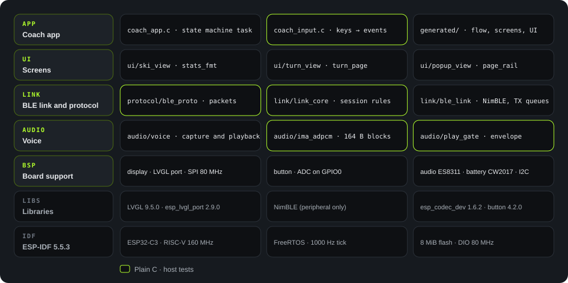
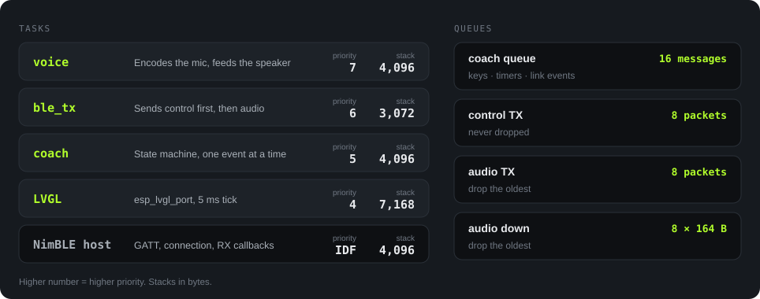

English · 简体中文
Firmware
Firmware architecture
The firmware runs on the ESP32-C3. It uses ESP-IDF 5.5.3 and FreeRTOS. The code is in Firmware/. The application is in main/, and the board support is in components/bsp/.
Sources: Firmware/flows/coach.flow.json (states and transitions), wc -l (lines, BSP included), and Firmware/tests/.
Layers

The design has two rules:
- Keep the logic away from the hardware. The state machine, key mapping, protocol codec, session rules, and ADPCM are plain C. You can test them on a computer.
- Compile the canvas into C at build time. The state machine is a graph in
coach.flow.json.flowc.pytranslates it into a C transition table. The device has no graph interpreter, so the runtime cost is zero (tools/flow/flowc.py, file header).
| Module | Path | Lines | Task |
|---|---|---|---|
| Application | main/main.c, coach_app.c, coach_input.c |
927 | Startup. Runs the state machine in one task. Changes keys into events. |
| Generated code | main/generated/ |
1,486 | Transition table, screen builders, data bindings, and screen effects. Do not edit. |
| Screens | main/ui/ |
746 | Live data, Turns, popup, page rail (D-33), and other screen parts. |
| Link and protocol | main/link/, main/protocol/ |
1,824 | Packets of document 07, handshake and session rules, and NimBLE GATT. |
| Voice | main/audio/ |
450 | Recording codec, playback start rule, volume envelope, and ADPCM. |
| BSP | components/bsp/src/ |
1,646 | Screen, LVGL port, key ADC, ES8311, fuel gauge, and I2C. |
| BSP reference | main/demo_*.c and others |
1,521 | Upstream demo programs. They stay as a reference. The linker deletes them. |
Startup order
Source: main/main.c
Tasks and queues

main/audio/voice.c:20-23, main/link/ble_link.c:27-32, main/coach_app.c:50-52, esp_lvgl_port defaults, and sdkconfig.The reasons for the priorities:
- voice is the highest (7). Audio has one block each 20 ms. A late block causes a gap in the sound (
voice.c:23, comment). - ble_tx is next (6). It sends control packets first and audio packets second.
- coach is 5. Keys, timers, and link events go into one queue. Thus, the state machine handles one event at a time, without concurrency problems.
- LVGL is 4. Drawing can wait for audio and BLE.
Each queue has a fixed size and a fixed overflow rule. A slow link does not make a queue larger (需求文件夹/02-architecture.md, section 5).
State machine
The state machine has 10 states and 83 transitions. flowc.py makes all of them from coach.flow.json into main/generated/coach_flow.c.
| Group | States | Description |
|---|---|---|
| Pages | LIVE, REPORT, TURNS |
Live data, report, and Turns. A short press of UP or DOWN moves in the loop. |
| Coach | READY, CAPTURE, WAIT_ANSWER, PLAYBACK |
Ready, recording, waiting for the answer, and playback. |
| Popup | POPUP_WAIT, POPUP_PLAY, POPUP_HOLD |
Waiting for voice, playing voice, and the 10 s countdown. |
Two timers (docs/heygo-changes.md, section 6):
- After 20 s in
CAPTURE, the timer sendsCAPTURE_LIMIT. A recording is 20 s at most. - After 10 s in
WAIT_ANSWER, the timer sendsAGENT_TIMEOUT.
Only one screen exists at a time. To change the screen, the task loads an empty screen, deletes the old screen, and then builds the new screen. Several screens at the same time do not fit in the LVGL pool.
The page rail is an exception. It is one object on the LVGL top layer that draws the four stops and the thumb. A screen change does not delete it. Thus, the rail uses only one object of the pool on each page (main/ui/page_rail.h, coach_app.c:749).
Audio path
Microphone to phone
ES8311 samples at 16 kHz, 16 bit. The voice task encodes one 164-byte ADPCM block each 20 ms. The block goes to the audio TX queue (8 packets, drop the oldest). ble_tx then sends it as a NimBLE notification.
Phone to speaker
NimBLE receives the packet. link_core checks the xid and accepts only the current stream. The block goes to the down queue (8 blocks). play_gate decides when playback starts. The device decodes the block and sends it through I2S and ES8311 to the speaker.
A 20 s question in raw PCM needs 640,000 bytes. The device has no PSRAM. Thus, it sends the recording while it records, and it does not keep the full recording (02-architecture.md, section 5).